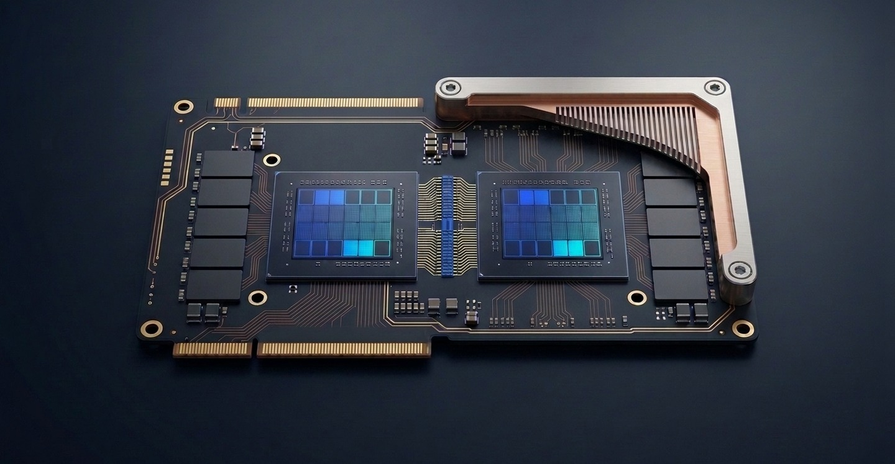

RISC-V RV64IMAFDC_Zve64f_Zvfbfmin_Xmer* on TSMC N4P (453.8 mm² single mask)
An open RISC-V GPU design for AI training
Compare the Mercury-1S PCIe card and Mercury-1D dual-chiplet module. Explore simulated thermals, PCB clearance, and training numerics.

Virtual Bring-Up & Qualification Telemetry
Precomputed results from the repository’s Python qualification runs.
Physical PCB Courtyard Audit
Separates standard OCP OAM (102 mm width) clearance limits from the Extended OAM-L (140x185 mm) module.
NRE Amortization & Volume Price
Hardware BOM ($2,456) plus $85M mask, IP, and software NRE.
Cycle-Level Architectural Crossbar & Multicast
64-bank Shared SRAM crossbar + 12-channel GDDR7 controller (128x128 vs. 256x128 A-multicast).
PyTorch Transformer Block FP8 Parity & Convergence
Real torch.nn Transformer forward/backward GEMMs + 20-step AdamW convergence.
Assembled 32-bit Open RISC-V Kernel Verification
Executed instruction-by-instruction on MercuryVM with strict async DMA/STME hazard-token checks.
Cluster Parallelism & Batch=1 Decode Boundary
8x/16x Mercury-1D training throughput alongside the honest single-stream B=1 decode ceiling.
Current Engineering Scope & Not Yet Built
Verified in This Repository
- Pre-silicon architectural specification, TSMC N4P floorplan, and clustered defect yield models.
- 2-node electro-thermal RC ODE simulator (die junction + backside clamshell GDDR7 + PROCHOT trip).
- PCB physical courtyard clearance checks (OAM 102 mm rejection vs. 140x185 mm Extended OAM-L) and $85M NRE amortization.
- Cycle-level architectural crossbar simulator, PyTorch Transformer parity + AdamW convergence, and 32-bit RISC-V Xmer* VM.
Not Yet Built (Next Silicon Milestones)
- Synthesizable SystemVerilog or Chisel RTL and Verilator gate/cycle-accurate co-simulation.
- TSMC N4P physical place-and-route, static timing analysis (STA) closure at 1.85 GHz, and IR-drop signoff.
- IBIS/HSPICE signal-integrity signoff for 32 Gbps PAM3 clamshell GDDR7 channels and 400GbE SerDes.
- Production LLVM codegen backend, Triton MLIR lowering passes, and Linux kernel/RDMA user-mode driver.